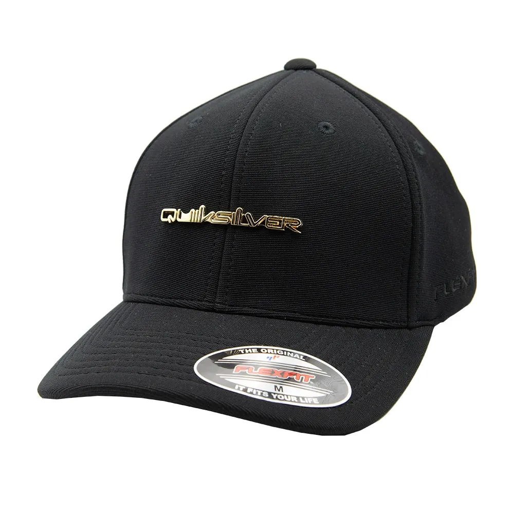

A Quiksilver foi fundada em 1969 na Austrália por Alan Green e John Law, inicialmente focada em roupas e acessórios para surfistas, especialmente bermudas resistentes e funcionais para o esporte. A marca cresceu rapidamente, tornando-se um ícone da cultura do surfe e do estilo de vida jovem e aventureiro. Ao longo dos anos, expandiu-se globalmente, incorporando outras marcas como Roxy (voltada ao público feminino) e DC Shoes (focada no skate). Apesar de enfrentar dificuldades financeiras nos anos 2010, a Quiksilver passou por reestruturações e hoje continua sendo uma referência no vestuário esportivo e na moda casual ligada ao surfe, skate e snowboard.
|  |
|---|